Version 1.7 · Installation, configuration and use, step by step
Starting from a machine's bill of materials, FOrdre prepares made-to-measure boxes and trays for 3D printing (one for each assembly step, with a compartment for each part and its labels) and then guides the workshop: who fills the boxes, who assembles, who verifies and who manages it all, until the machine is finished and there is a report of everything that was done.
This manual follows a real example from start to finish: the DX-1 dispenser, which comes with FOrdre, and a workshop with four people: Rosa (Manager), Marc (Warehouse), Anna (Assembler) and Pau (Quality).
The screenshots in this manual show FOrdre in English. To change the language, see section 3.7.
| Tool | Where it is used | What it is for |
|---|---|---|
Configurator (index.html) | Computer | Import the bill of materials, see the boxes in 3D, and download the STL files to print, the labels and the route sheet. |
Workshop app (muntatge.html) | Phone or tablet | Each person signs in with their role: fill boxes, assemble, verify, manage orders and see results. |
Workshop server (servidor/) | Raspberry Pi or PC | Shares everything in real time between devices, stores people and orders, and enforces the rules. |
All three tools work without internet. The server is optional: without a server, each device works on its own.
| Word | What it means |
|---|---|
| Project | A machine: its assembly tree, its materials and the box configuration. It is saved in a .fordre.json file. |
| Assembly | A part of the machine that is built in one step (for example, Motor unit). It can have sub-assemblies: this is the assembly tree. |
| Material | Each different part: a plate, a screw, a motor, a tube of glue… |
| Compartment | The made-to-measure cavity where one material goes. There are never two materials in the same compartment. |
| Tray / box / container | Where the compartments go. A tray has many compartments; a box holds a single material; a container carries boxes inside. |
| Kit | All the boxes for one assembly step. |
| Storage box | The box where a sub-assembly is kept once assembled, to take it to the next step. |
| Production order | One specific unit being built (for example, OF-2026-002, serial number DX1-0042). It has its own progress, log and report. |
| Shortage | Material that has not arrived (or not enough of it). |
| Defective part | A part that arrived damaged or broke during assembly. |
| For… | You need |
|---|---|
| The configurator | A computer with Chrome, Edge or Firefox (Windows, macOS or Linux). |
| The workshop app | Android phones or tablets, or iPhone/iPad, with the browser. A camera to scan (optional: a USB or Bluetooth barcode reader also works). |
| The workshop server (optional) | A Raspberry Pi 3, 4 or 5 (or any computer) with Node.js 18 or later, connected to the workshop network. |
| Printing the boxes | A 3D printer and its slicer (PrusaSlicer, Cura, Bambu Studio, OrcaSlicer…). |
| Printing the labels | A label printer (Brother, Dymo…), a thermal roll printer or adhesive A4 sheets. |
There are three ways to use FOrdre. Choose the one that suits you:
| Way | When it fits |
|---|---|
| A. Online demo | To try it right now, without installing anything. |
| B. ZIP folders, by double-click | For a single person or to prepare boxes, without a shared workshop. |
| C. Workshop server | When several people work at the same time with phones and tablets. This is the complete way. |
The demo stores data only in the browser you use. To work for real with a team, use the workshop server (option C).
The FOrdre-eines-x.y.z.zip file has one folder per tool (the folder names are in Catalan):
FOrdre/
├── LLEGEIX-ME.txt (read me)
├── 1-configurador/ index.html → the configurator
├── 2-taller/ muntatge.html → the workshop app
│ rol-magatzem.html, rol-muntador.html,
│ rol-qualitat.html, rol-responsable.html
├── 3-servidor/ the whole solution, with the server
└── 4-documentacio/ this manual, the README and the screenshotsDocuments\FOrdre).1-configurador/index.html.2-taller/muntatge.html, or directly rol-magatzem.html (Warehouse) or the role you want.Limitations when opened by double-click:
1-configurador/exemples/..fordre.json file (see section 5.10).This is the recommended way: the Raspberry Pi stays on in the workshop and every device connects to it over Wi-Fi.
Step 1. Prepare the SD card
fordre (it will then be reachable as fordre.local).taller and a strong password.Step 2. Connect to it
From a computer on the same network, open a terminal (on Windows, PowerShell):
ssh taller@fordre.localIf it cannot be found by name, look up its IP address on the router (for example, 192.168.1.50) and run ssh taller@192.168.1.50.
Step 3. Install FOrdre
sudo apt update && sudo apt install -y git
git clone https://github.com/Bioquad/FOrdre.git
cd FOrdre
sudo bash servidor/configura-raspberry.shThe script:
fordre service, which starts by itself every time the Raspberry Pi boots;If you do not have the repository, you can also copy the ZIP's 3-servidor folder to the Raspberry Pi (with a USB stick or scp) and run the same sudo bash servidor/configura-raspberry.sh.
Step 4. Check that it works
sudo systemctl status fordre # must say "active (running)"
journalctl -u fordre -f # shows the log and the QR (Ctrl+C to exit)In the log you will see something like this (the server console messages are in Catalan):
FOrdre · servidor del taller 1.7.0
────────────────────────────────────
Dades: /home/taller/FOrdre/servidor/dades
App taller: https://192.168.1.50:8443/muntatge.html (per rol: …/muntatge.html?rol=magatzem · muntador · qualitat · responsable)
Configurador: https://192.168.1.50:8443/index.html
Nom de xarxa: https://fordre.local:8443/muntatge.html
Primer cop: http://192.168.1.50:8080/ (certificat i ajuda)
Primer ús: obre l'app del taller i crea el primer Responsable.
Escaneja aquest QR amb el mòbil (mateixa Wi-Fi):That is: data folder, workshop app, configurator, network name, the first-time page (certificate and help), and the QR to scan with a phone on the same Wi-Fi.
Step 5. Give it a fixed IP (highly recommended)
The server creates a security certificate for its address. If the Raspberry Pi changes IP, the certificate is regenerated and has to be installed again on every phone. To avoid this:
https://fordre.local:8443.Useful commands
| What you want to do | Command |
|---|---|
| See the log and the QR | journalctl -u fordre -f |
| Stop the server | sudo systemctl stop fordre |
| Start it again | sudo systemctl restart fordre |
| Update FOrdre | cd ~/FOrdre && git pull && sudo systemctl restart fordre |
| Change the ports | FORDRE_PORT=9443 FORDRE_PORT_HTTP=9080 sudo -E bash servidor/configura-raspberry.sh |
| Set a network key | FORDRE_CLAU=4821 sudo -E bash servidor/configura-raspberry.sh |
FOrdre\3-servidor\servidor.inicia-windows.bat. A window opens with the addresses and the QR.To have it start automatically with the computer: press Win + R, type shell:startup and put a shortcut to inicia-windows.bat there.
Set the computer to never sleep: if it goes to sleep, the phones lose the connection (they keep working and will send everything when it comes back, but nothing is seen in real time).
cd FOrdre/3-servidor # or the repository folder
bash servidor/inicia.sh # Ctrl+C to stop itOn Linux with systemd (Debian, Ubuntu…) you can also use sudo bash servidor/configura-raspberry.sh to install it as a service.
The camera scanner only works over secure (https) connections. The server uses its own certificate, and each device has to accept it once.
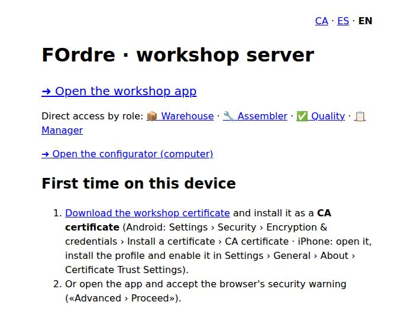
http://<server-address>:8080 (for example, http://192.168.1.50:8080). The help page opens, in the browser's language (you can choose CA · ES · EN at the top).fordre-taller.crt file.node servidor/fordre-servidor.js [--port 8443] [--port-http 8080] [--dades folder] [--clau PIN] [--nou-certificat]| Option | Environment variable | Default | What it does |
|---|---|---|---|
--port | FORDRE_PORT | 8443 | Secure (https) port for the apps. |
--port-http | FORDRE_PORT_HTTP | 8080 | Port for the help page and the certificate. |
--dades | FORDRE_DADES | servidor/dades | Folder where everything is stored. |
--clau | FORDRE_CLAU | (none) | Network key: an extra barrier before each person's PIN. It must be entered in the app's ⋮ menu. |
--nou-certificat | — | — | Forces a new certificate. |
Example: a server with a network key and the data on a USB disk:
node servidor/fordre-servidor.js --clau 4821 --dades /media/usb/fordre-dadesEverything the workshop does is stored in servidor/dades/:
dades/
├── projectes/ one file per published project
├── ordres/ the orders of each project
├── progres/ the progress of each order (with a .bak copy of the previous state)
├── fotos/ the photos, by project and order
├── persones.json people, roles and PIN hashes (never the PIN in plain text)
└── certificat/ the server's https certificateMaking a backup (on the Raspberry Pi, with a USB stick mounted at /media/usb):
sudo systemctl stop fordre
cp -r ~/FOrdre/servidor/dades /media/usb/fordre-dades-$(date +%Y%m%d)
sudo systemctl start fordreOn Windows, close the server window and copy the servidor\dades folder wherever you like.
Restoring it: stop the server, replace the dades folder with the copy and start it again.
Updating FOrdre: git pull and restart the server (see section 2.4). The data is not touched.
Press ⚙ Settings on the configurator's top bar. Changes apply instantly and can be seen in the 3D view. The Defaults button puts everything back as it was at the start.
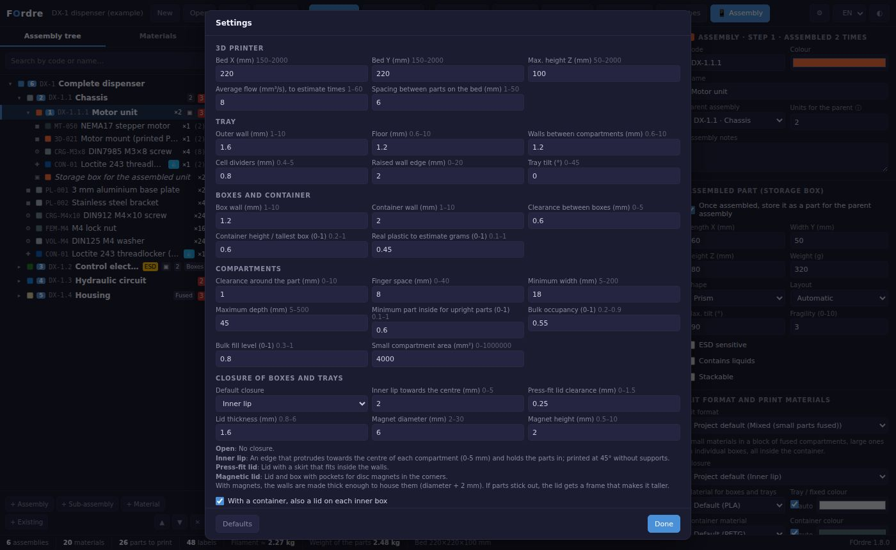
3D printer
| Field | Default | Limits | When to change it |
|---|---|---|---|
| Bed X / Bed Y (mm) | 220 × 220 | 150–2000 | Enter the usable size of your printer's bed. Trays will never exceed it. |
| Max. height Z (mm) | 100 | 50–2000 | Maximum height you want to print. |
| Average flow (mm³/s) | 8 | 1–60 | To estimate the printing hours of each batch. |
| Spacing between parts on the bed (mm) | 6 | 1–50 | Distance between parts in the print batches. |
Tray
| Field | Default | Limits | Notes |
|---|---|---|---|
| Outer wall (mm) | 1.6 | 1–10 | Thicker means stronger and more filament. |
| Floor (mm) | 1.2 | 0.6–10 | |
| Walls between compartments (mm) | 1.2 | 0.6–10 | |
| Cell dividers (mm) | 0.8 | 0.4–5 | Separate the units in individual layout. |
| Raised wall edge (mm) | 2 | 0–20 | Stops parts rolling out when the tray is moved. |
| Tray tilt (°) | 0 | 0–45 | Trays tilted on a wedge. It limits itself if there are parts that cannot lie flat. |
Boxes and container
| Field | Default | Limits |
|---|---|---|
| Box wall (mm) | 1.2 | 1–10 |
| Container wall (mm) | 2 | 1–10 |
| Clearance between boxes (mm) | 0.6 | 0–5 |
| Container height relative to the tallest box (0–1) | 0.6 | 0.2–1 |
| Real plastic to estimate grams (0–1) | 0.45 | 0.1–1 |
Compartments
| Field | Default | Limits | Notes |
|---|---|---|---|
| Clearance around the part (mm) | 1 | 0–10 | Play so the part goes in and out easily. |
| Finger space (mm) | 8 | 0–40 | Space to pick up the parts. |
| Minimum width (mm) | 18 | 5–200 | A finger has to fit. |
| Maximum depth (mm) | 45 | 5–500 | |
| Minimum part inside for upright parts (0–1) | 0.6 | 0.1–1 | Parts that stand upright (liquids): how much stays inside. |
| Bulk occupancy (0–1) | 0.55 | 0.2–0.9 | How much space heaped material takes. |
| Bulk fill level (0–1) | 0.8 | 0.3–1 | How far it is filled (not right to the top). |
| Small compartment area (mm²) | 4000 | — | Below this, the compartment is small (important for the mixed format). |
Closure of boxes and trays
| Field | Default | Notes |
|---|---|---|
| Default closure | Inner lip | Open, Inner lip, Press-fit lid or Magnetic lid (see section 3.3). |
| Inner lip towards the centre (mm) | 2 | 0–5. Printed at 45°, without supports. |
| Press-fit lid clearance (mm) | 0.25 | Calibrated with the calibration piece. |
| Lid thickness (mm) | 1.6 | |
| Magnet diameter and height (mm) | 6 × 2 | The disc magnets you have. |
| Also a lid on each inner box | Yes | With a container. |
| Stackable containers | Yes | All with the same footprint and a foot that fits into the one below. |
| Handles on the short sides | Yes | |
| QR engraved on the lids | Yes | It reads better if you go over it with a marker. |
Identification and ergonomics
Kit format and print materials
| Field | Default |
|---|---|
| Default format | Mixed (small parts fused) |
| Material for boxes and trays | PLA |
| Material for ESD parts | PETG-ESD (antistatic) |
| Container material | PETG |
| Colour of the individual boxes | The material's (also: the assembly's, by type, or a fixed colour) |
| Fixed colour / trays, container colour | Light grey / bluish grey |
Available print materials: PLA, PETG, ABS, ASA, PC, PA (nylon), PP, TPU (flexible), PETG-ESD (antistatic) and carbon-fibre PLA. Boxes for ESD-sensitive parts are made separately in the antistatic material.
Example. A printer with a 250 × 210 mm bed, PETG boxes, lids with 8 × 3 mm magnets and 12 mm tape labels: Bed X 250, Bed Y 210, Box material PETG, Closure Magnetic lid, Magnet diameter 8, Magnet height 3, Labels 12 mm tape.
Every printer prints slightly differently. The calibration piece adapts the lids and fits to yours.
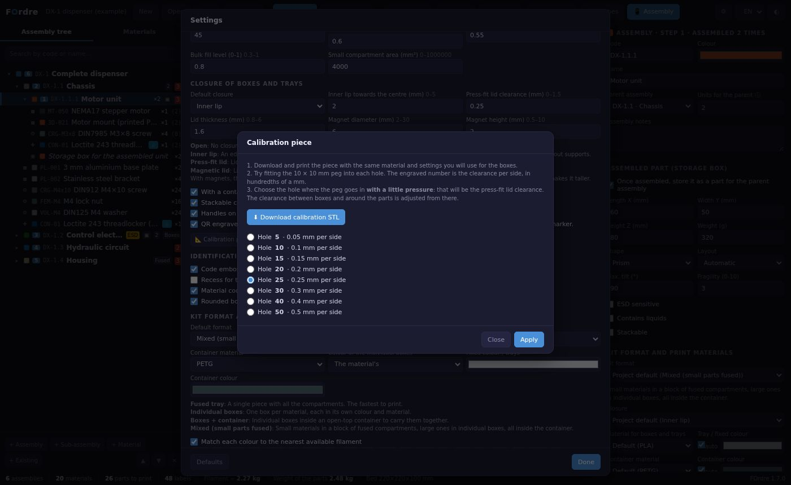
Kit formats (for the whole project or for each assembly):
| Format | What it is like | When to choose it |
|---|---|---|
| Fused tray | A single piece with all the compartments. | The fastest to print. Small kits. |
| Individual boxes | One box per material, each in its own colour and material. | When materials are restocked separately. |
| Boxes + container | The individual boxes inside an open-top container, with notches to lift them out. | To carry the whole kit at once. |
| Mixed (recommended) | Small materials in a block of fused compartments, large ones in individual boxes, all inside the container. | The best balance. |
Closures:
| Closure | What it is like | When to choose it |
|---|---|---|
| Open | No closure. | Trays that are not moved. |
| Inner lip (0–5 mm) | An edge that protrudes towards the centre of each compartment and holds the parts in. | Default: no lid needs printing. |
| Press-fit lid | A lid with a skirt that fits inside. | For transport. Calibrate the clearance (section 3.2). |
| Magnetic lid | Disc magnets in the corners of the box and the lid. | Opens and closes very quickly. The walls are made thicker to house them. |
The format is chosen in ⚙ Settings › Labels (or on any material's card, in the Label section) and applies to the whole project. With Custom… you enter the width and height.
| Format | Size | Printer |
|---|---|---|
| 9 / 12 / 18 / 24 mm tape | Automatic length | Brother P-touch, Dymo, laminated tapes |
| Thermal roll | 62 × 29, 50 × 25 or 40 × 20 mm | Thermal label printers |
| A4 sheet | 70 × 37 (3 × 8), 48.5 × 25.4 (4 × 11), 38 × 21.2 (5 × 13), 25.4 × 10 (7 × 27) | Normal printer with adhesive sheets |
| Custom | Whatever you want | — |
Each label carries the code, name, quantity, step, assembly, the colours, a QR and a barcode (Code 128). The label adapts to the compartment width: if it is very narrow, the QR is left out. The label texts are printed in the configurator's language. When printing, choose 100 % scale (not "fit to page").
First use. The first time the app is opened with the server, it asks you to create the Manager:
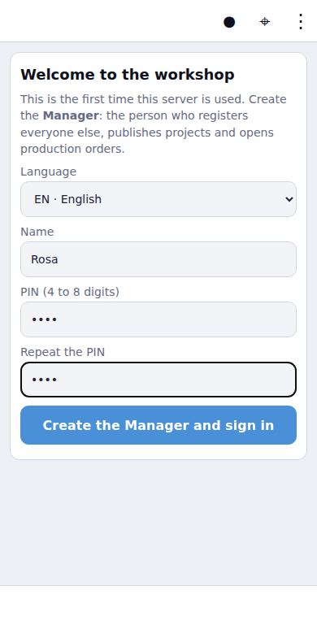
1111, which you will later change to a safe one).If the server does not have any project yet, the app says so. The Manager publishes it from the configurator (section 5.10), or can tap Example project to try it out: if they are signed in as Manager, the example is published to the server automatically.
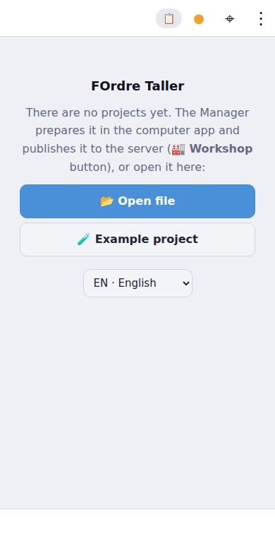
Registering everyone else. As Manager: 📋 Board › 👥 People.
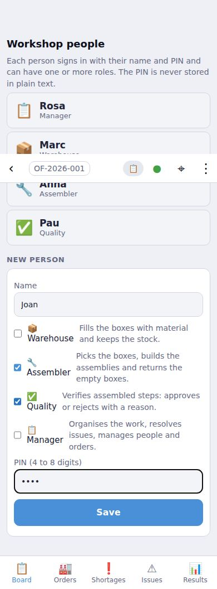
In the example:
| Person | Roles | Example PIN |
|---|---|---|
| Rosa | Manager | 1111 |
| Marc | Warehouse | 2222 |
| Anna | Assembler | 3333 |
| Pau | Quality | 4444 |
| Joan | Assembler and Quality | 5555 |
What each role can do:
| Role | Can |
|---|---|
| 📦 Warehouse | Fill and empty boxes, mark shortages and defective parts, stock, return boxes. |
| 🔧 Assembler | Pick boxes, start steps and mark them as assembled (also with shortages), complete them, log broken parts, return boxes. |
| ✅ Quality | Verify (approve or reject), decide what to do with defective parts, log them, resolve issues. |
| 📋 Manager | Everything above, plus publish projects, open and close orders, assign steps and manage people. |
Everyone can open issues, take photos and look at the log and the results.
Four-eyes rule. Whoever assembled a step cannot verify it. Joan, who has both roles, can verify what Anna assembles, but not what he assembles himself. The Manager does not have this limitation.
Changing a PIN or the roles: People › tap the person › change what is needed › Save. If you leave the PIN empty, it is not changed.
Deactivating someone: People › tap the person › Deactivate. They can no longer sign in and their sessions are closed. The log of what they did is kept. The workshop does not allow deactivating the last Manager.
If a device is always used for the same job (the warehouse tablet, the assembly line tablet…), give it a shortcut to its role:
| Role | Address |
|---|---|
| 📦 Warehouse | https://<server>:8443/muntatge.html?rol=magatzem |
| 🔧 Assembler | https://<server>:8443/muntatge.html?rol=muntador |
| ✅ Quality | https://<server>:8443/muntatge.html?rol=qualitat |
| 📋 Manager | https://<server>:8443/muntatge.html?rol=responsable |
The role names in the address (magatzem, muntador, qualitat, responsable) are fixed, whatever the language. To have it in English as well, add &lang=en, for example …/muntatge.html?rol=magatzem&lang=en.
Open the address and save it to the home screen. The server's help page (http://<server>:8080) has the four links. With the app installed, a long press on the icon also shows the role shortcuts. If the person signing in does not have that role, the app tells them and uses their own.
The ZIP's 2-taller folder has the same shortcuts as files: rol-magatzem.html, rol-muntador.html, rol-qualitat.html and rol-responsable.html.
FOrdre can be used in Catalan, Spanish and English. Where to choose it:
| Tool | Where |
|---|---|
| Configurator | The CA / ES / EN selector on the top bar, next to ◐. |
| Workshop app | Menu ⋮ › Language, or below the list of people on the sign-in screen. |
| Server help page | Shown in the browser's language. The CA · ES · EN links are at the top. |
?lang=ca, ?lang=es or ?lang=en. For example, the warehouse tablet in English: https://<server>:8443/muntatge.html?rol=magatzem&lang=en.FOrdre reads two kinds of list, in Excel (.xlsx, .xls, .ods) or CSV (.csv, separated by ;, , or tab). Columns are recognised in Catalan, Spanish and English, and they can be corrected before importing.
Download the template with the configurator's CSV template button: the headers are in the configurator's language. Each row is a material inside an assembly. A row with an assembly but no material code defines the assembly itself.
| Column | Required | What goes in it | Example |
|---|---|---|---|
assembly | Yes | Code of the assembly where the material is fitted. | XAS |
assembly name | — | Name of the assembly. | Chassis |
parent | — | Code of the assembly where this assembly is fitted (empty if it is the machine). | MAQ |
code | Yes* | Material code. *Empty on an assembly row. | PL-001 |
name | — | Material name. | Aluminium base plate |
quantity | Yes | How many each unit of the assembly needs. On an assembly row: how many units the parent needs. | 2 |
x, y, z | Recommended | Part dimensions, in mm (length, width, height). | 180, 120, 3 |
weight | — | Weight of one unit, in g. | 175 |
type | — | part, screw (hardware and small items) or consumable. | part |
shape | — | box (prism) or cylinder. | box |
esd | — | Sensitive to static electricity: 1/0 (also yes/no). | 0 |
liquid | — | Contains liquids: 1/0. It will stand upright. | 1 |
max angle | — | Maximum tilt in degrees (90 = can lie completely flat). | 30 |
stackable | — | Can be stacked: 1/0. | 1 |
max stack | — | How many units can be stacked. | 5 |
fragility | — | Fragility from 0 to 10. | 7 |
layout | — | auto, individual, stacked, layer or bulk. | bulk |
colour | — | Colour of the material or assembly, as #RRGGBB. | #9AA5B1 |
origin | — | own (in-house design) or bought. | bought |
supplier | — | Supplier or reference. Groups the purchase list and the returns. | Würth |
notes | — | Free notes. | |
torque | — | Tightening torque in N·m. Shown in the assembly step. | 2.5 |
assembly note | — | Assembly note for this item. | Crosswise |
instructions | — | (Assembly row) assembly steps, separated by |. | Offer up the plates | Fit the brackets | Tighten crosswise |
tools | — | (Assembly row) tools needed. | 3 mm Allen key, torque wrench |
closure | — | (Assembly row) none, lip, press or magnets. | magnets |
kit format | — | (Assembly row) fused, individual, container or mixed. | container |
box material | — | Print material of this material's box. | PETG |
box colour | — | Colour of this material's box. | #FDD835 |
Values are also understood in Catalan and Spanish (for example, peca/pieza, cargol/tornillo, llavi/labio).
Full example (this is the template, read as a table):
| assembly | assembly name | parent | code | name | quantity | x | y | z | type | layout | torque | instructions |
|---|---|---|---|---|---|---|---|---|---|---|---|---|
| MAQ | Complete machine | 1 | Final assembly | Function test | |||||||||
| XAS | Chassis | MAQ | PL-001 | Aluminium base plate | 2 | 180 | 120 | 3 | part | auto | ||
| XAS | Chassis | MAQ | CRG-M4x10 | DIN912 M4x10 screw | 24 | 10 | 7 | 7 | screw | bulk | 2.5 | |
| XAS | Chassis | MAQ | CON-01 | Threadlocker 243 | 1 | 25 | 25 | 75 | consumable | individual | ||
| MOT | Motor unit | XAS | 2 | 60 | 50 | 80 | Offer up the motor | Tighten the 4 screws | |||||
| MOT | Motor unit | XAS | MT-050 | NEMA17 motor | 1 | 42 | 42 | 48 | part | auto | ||
| ELE | Electronics | MAQ | PCB-100 | Control board | 1 | 100 | 70 | 18 | part | individual |
It reads like this: the machine (MAQ) has a chassis (XAS) and electronics (ELE). The chassis takes 2 plates, 24 screws and a threadlocker, and also 2 motor units (MOT), which are assembled first and kept in a 60 × 50 × 80 mm storage box.
Export the bill of materials with levels (indented) from your program: FreeCAD, Fusion 360, SolidWorks, Inventor, Onshape… It must have:
1, 2, 3, or 1, 1.1, 1.1.2, or the indented name);If it has dimensions (Length, Width, Height) and weight (Mass), even better. Example (exemples/bom_cad_solidworks.csv):
Item No.,Part Number,Description,QTY.,Length (mm),Width (mm),Height (mm),Mass (g)
1,ASM-100,Base assembly,1,300,200,80,2400
1.1,PL-10,Base plate,1,180,150,5,900
1.2,SUB-20,Bracket subassembly,2,50,40,30,120
1.2.1,BR-1,Bracket,1,50,40,3,40Rows that have children become assemblies. If they have dimensions, those are the assembled part, and they will get a storage box.
Export tips:
When a sub-assembly is built first and has to be taken to the parent assembly, give it the dimensions of the finished part (on the assembly row, or on the Assembled part card). FOrdre:
| Problem | Solution |
|---|---|
| A material comes out with 0 dimensions and a small compartment. | Fill in x, y and z. Without dimensions, FOrdre does not know how much space it needs. |
| Screws take up too much space. | Set layout = bulk and type = screw. |
| A bottle comes out lying down. | Set liquid = 1 and a low max angle: it will stand upright. |
| The BOM does not create assemblies. | Check that the level column is correctly mapped in the import dialog. |
| Units come out far too large or too small. | Choose the Length units (mm, cm, m or inches) and Weight units (g, kg or lb) in the dialog. |
| Instructions on a single line. | Separate the steps with |. |
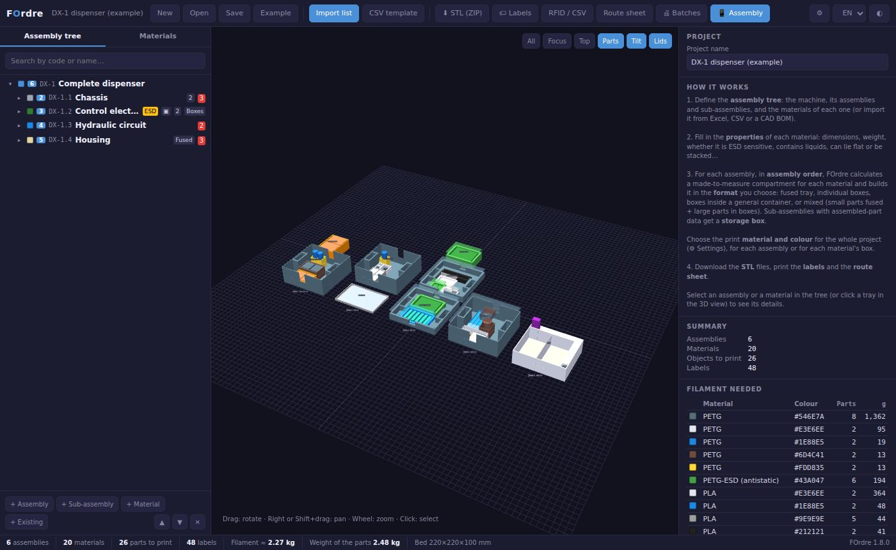
The screen has three parts:
The top bar has: New, Open, Save, Example, Import list, CSV template, ⬇ STL (ZIP), 🏷 Labels, RFID / CSV, Route sheet, 🖨 Batches, 📱 Assembly, 🏭 Workshop (only with the server), ⚙ Settings (on narrow screens, just the ⚙ icon), the CA / ES / EN language selector and ◐ (light or dark theme).
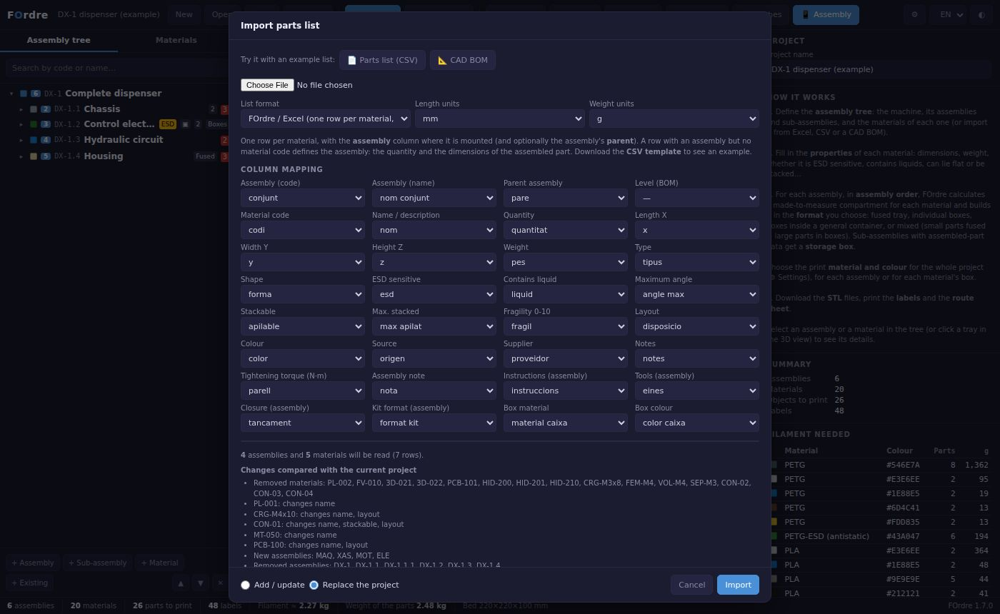
With a CAD BOM, the dialog recognises the level column:
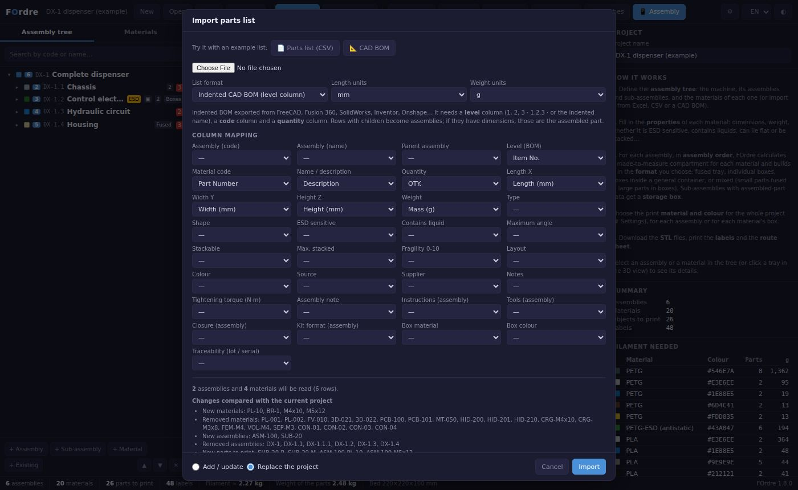
The example lists that come with FOrdre have the part names in Catalan: they are data, and are shown as written.
After importing, FOrdre calculates the boxes and shows them in 3D. Tap an assembly in the tree and its boxes are highlighted.
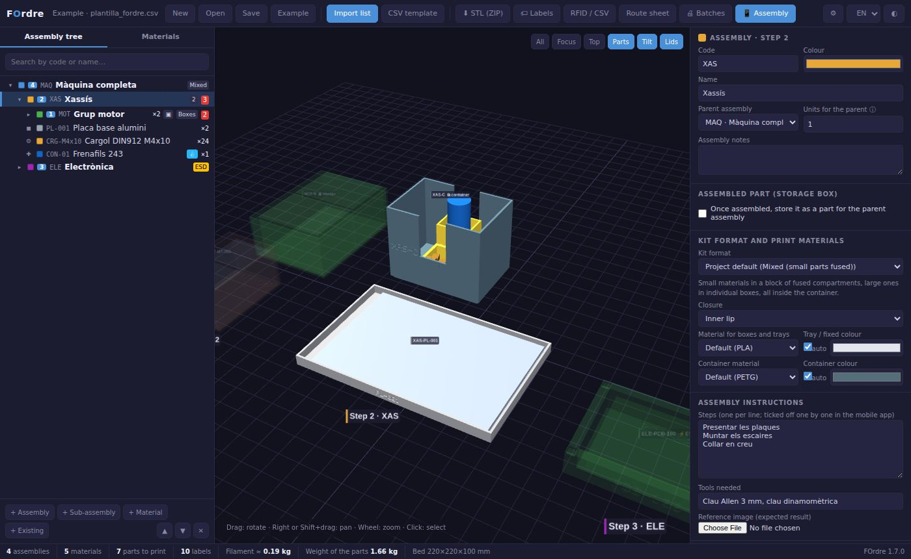
3D view controls:
| Action | How |
|---|---|
| Rotate | Drag with the left button. |
| Pan | Drag with the right button, or with Shift + left button. |
| Zoom | Mouse wheel. |
| Select | Click on a box. |
| Show all / focus on the selection | All and Focus buttons, or the Home and F keys. |
| Top view | Top button. |
| Show or hide the parts, the tilt or the lids | Parts, Tilt and Lids buttons. |
Marks in the tree: the blue number is the assembly step; ESD marks static-sensitive parts; ▣ means it has a storage box; Boxes or Fused show the format; the red number is the warnings.
Tap a material in the tree (inside its assembly) or in the Materials tab.
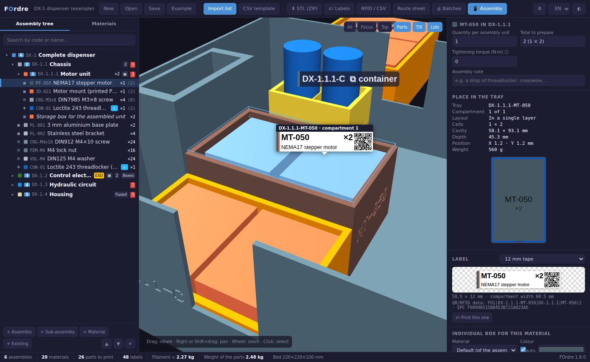
The card has these parts:
Example: the NEMA17 motor (MT-050) goes in a single layer, with 2 cells (one for each motor unit), inside container DX-1.1.1-C.
Tap an assembly in the tree.
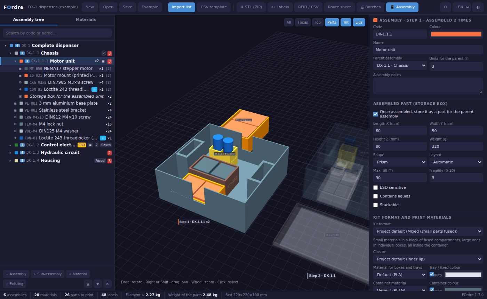
With the + Assembly, + Sub-assembly, + Material, + Existing (a material that is already there), ▲ ▼ (move) and ✕ (delete) buttons you can edit the tree by hand.
The Materials tab shows all the machine's materials with the total for each one. From here they can be edited and exported as CSV.
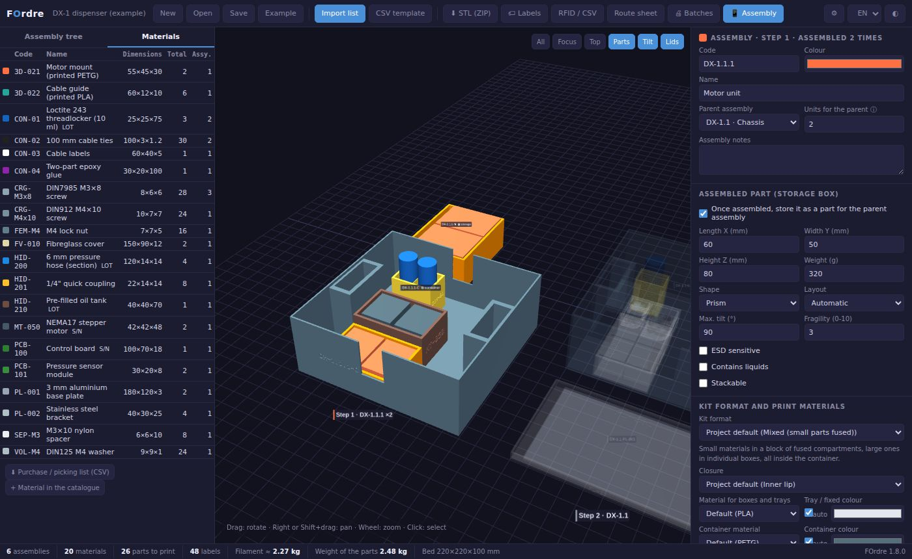
The boxes (STL and 3MF)
README.txt with the filament needed. Each file name carries the step, the object, the material and the colour, for example 01_DX-1.1.1-C_PETG_546E7A.stl.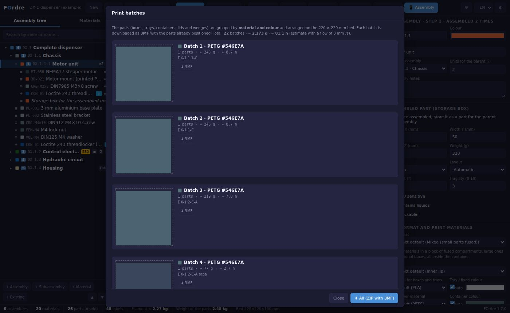
Printing tips:
The labels
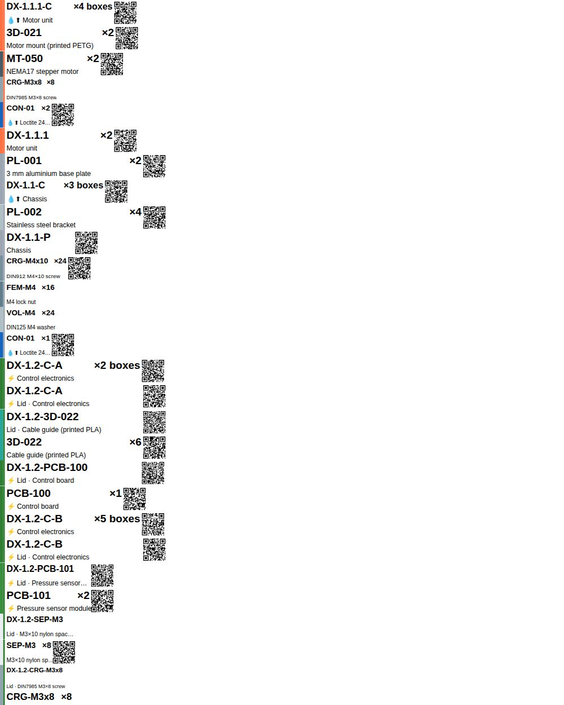
The route sheet
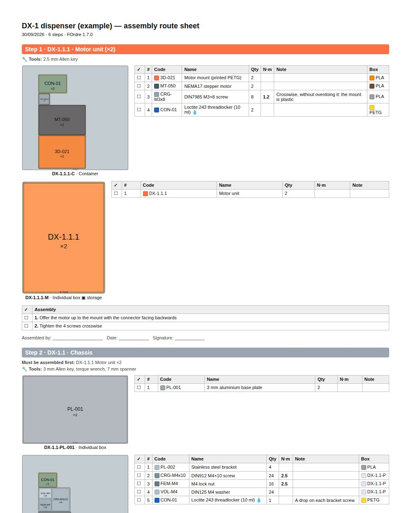
Import the list again (Add / update mode). Before importing, FOrdre shows what has changed (new or removed materials, dimensions, quantities) and which boxes must be reprinted. Each revision is kept on the project card, under Bill of materials revisions.
.fordre.json file. Keep it with the machine's documentation..fordre.json.With the workshop server (recommended)
https://<server>:8443/index.html.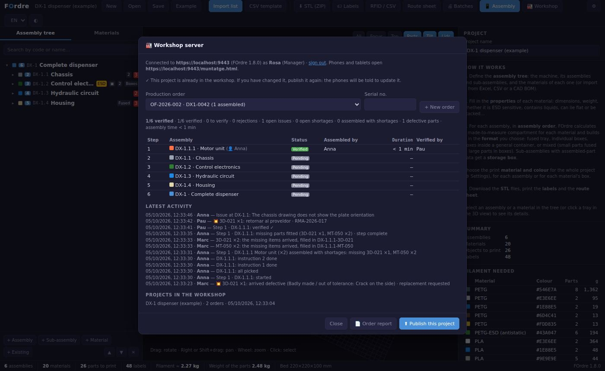
If you change the project, publish it again: the phones will be told to update it (the status dot turns into ⟳).
Without a server
Press 📱 Assembly. You can pass the project in these ways:
.fordre.json file (in the app: menu ⋮ › Open project file).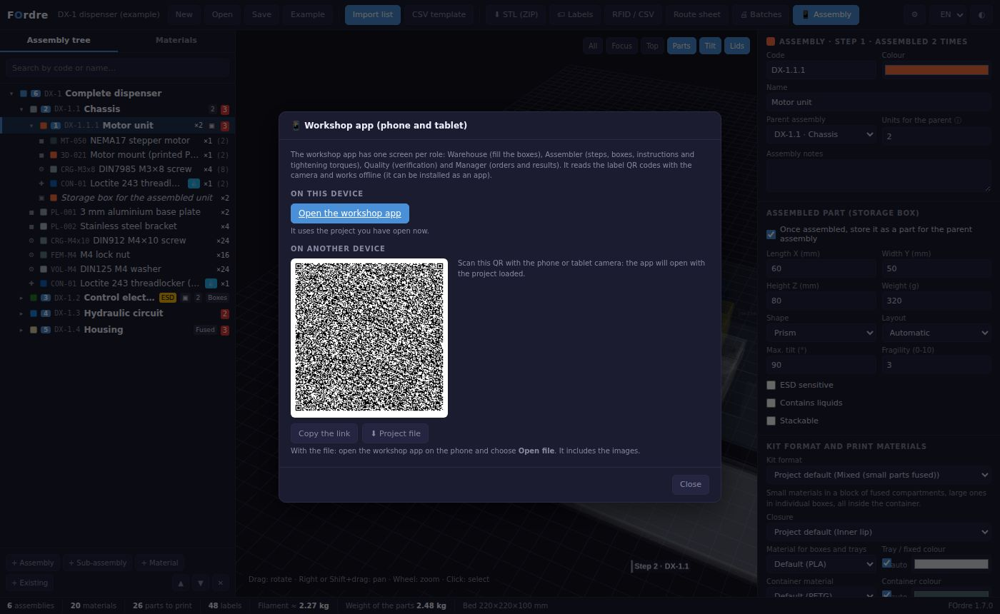
https://<server>:8443/muntatge.html, or your role's shortcut).| Choose the name | Type the PIN |
|---|---|
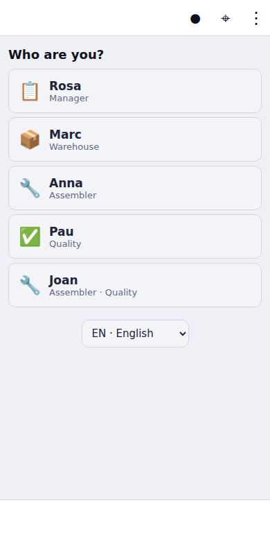 | 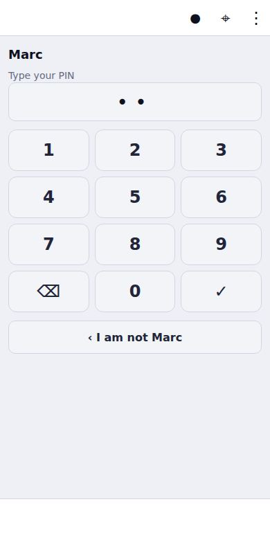 |
The header, from left to right:
OF-2026-002): tap it to change order. If 🔒 appears, the order is closed.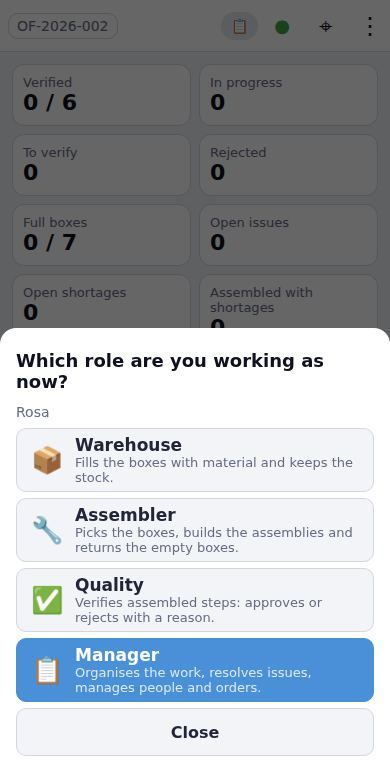
At the bottom are your role's tabs. The number in brackets shows how many things are pending (shortages, issues, defects).
Creating a production order. Orders tab:
OF-2026-002); you can change it.DX1-0042) and some notes (for example, Customer: Vallès Laboratories).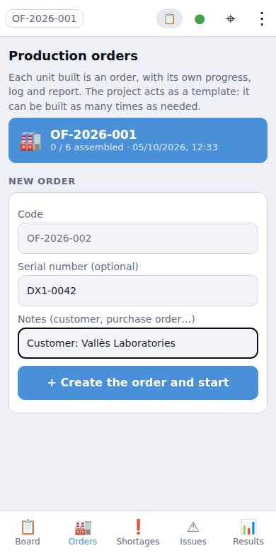
A device signing in for the first time goes to the most recent order; after that, each device remembers the last order it worked on. To change order, tap the code in the header.
Assigning steps. On the Board, for each step, choose the person under Assigned to. The assembler will see it marked with 👤 and the Continue button will offer them their own steps first.
Fill tab. Shows the order's boxes by step, with their status: Empty, Filling, Full, With shortages, In use or Returned.
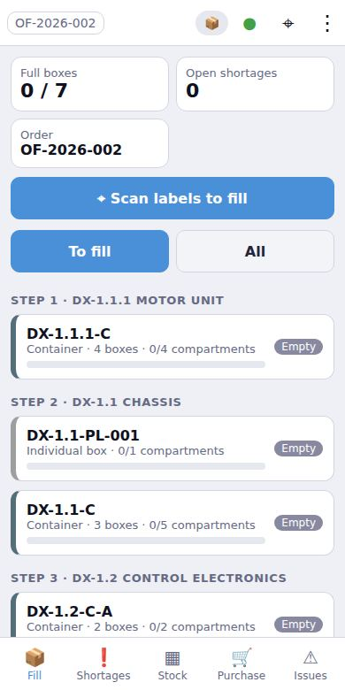
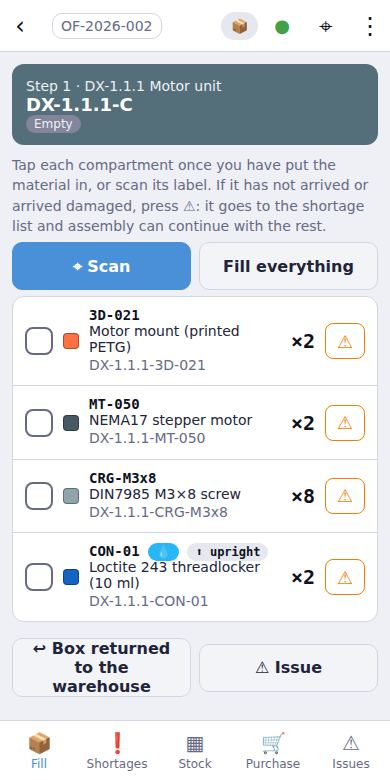
When there is a problem with a material: ⚠ button
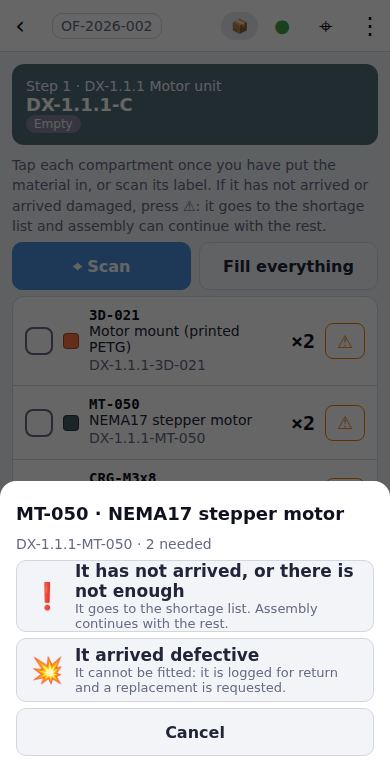
When the missing material arrives: scan the compartment's label (or tap it and confirm it has arrived). The compartment is topped up, the shortage closes by itself and the assembler will see it.
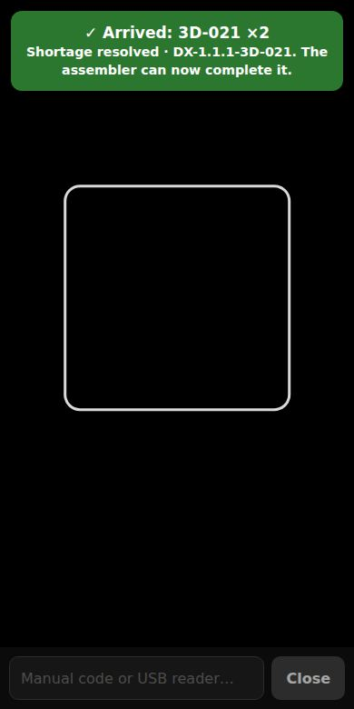
Shortages tab. Everything that is missing, grouped by material: how many, for which step and box, since when, supplier and note. Copy, Share and ⬇ CSV buttons to send it to purchasing. It also gives access to the defective parts and returns.
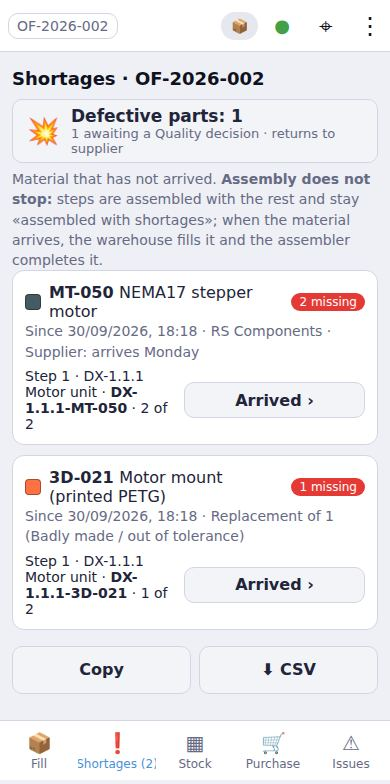
Stock tab. Needed is what still has to go into the boxes; In stock is the stock. The − and + buttons add or subtract one unit, and typing a number records a count.
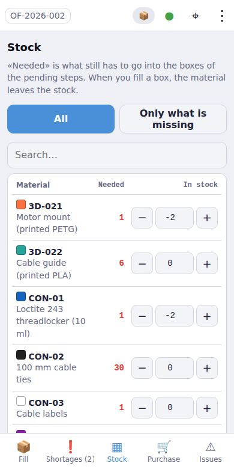
Purchase tab. What has to be bought to finish the order, grouped by supplier. Shortages are marked as ❗ urgent.
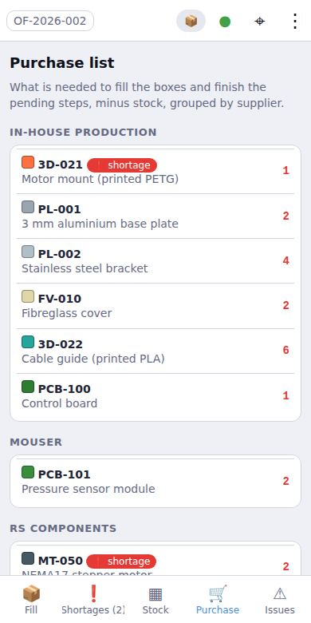
Returning the boxes. When a box comes back empty and clean to the warehouse, open it and press ↩ Box returned to the warehouse. The assembler can do this too.
Steps tab. The steps in assembly order, with their status. A step stays locked until its sub-assemblies are assembled (even with shortages). Continue takes you to the next one for you.
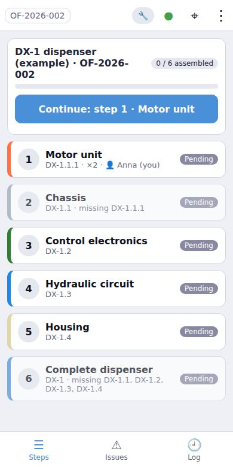
Inside a step, from top to bottom:
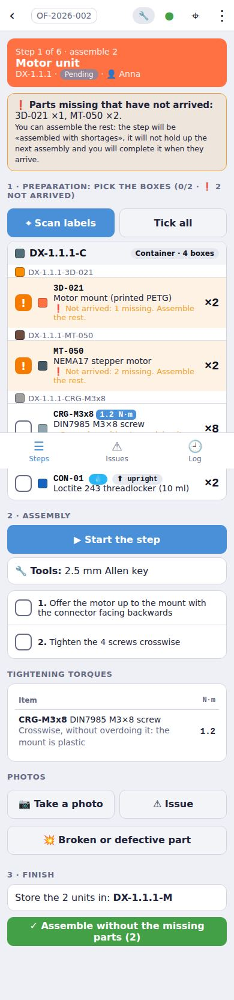
Assembling with shortages. If a part is missing, the button reads ✓ Assemble without the missing parts. The step becomes "Assembled with shortages" and does not hold up the next assembly: the rest of the machine can go ahead. When the material arrives, the step says "Already arrived…" and the ✓ Complete button becomes active.
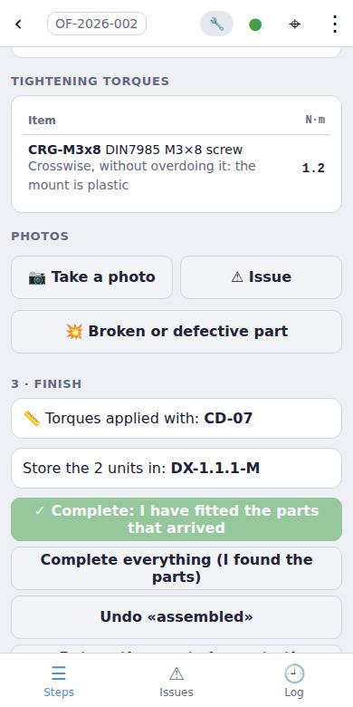
Complete everything (I found the parts) is for when the missing parts turned up another way. The app asks for confirmation.
Undo "assembled" takes the step back to its previous state (for example, if you picked the wrong step). It cannot be done once Quality has verified it.
Verify tab. Steps are shown in four groups:
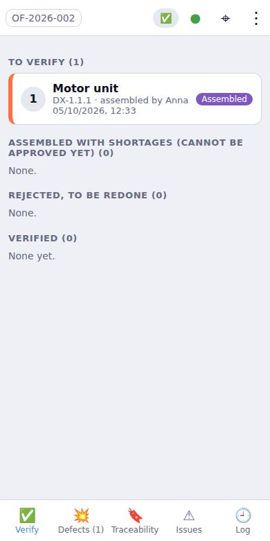
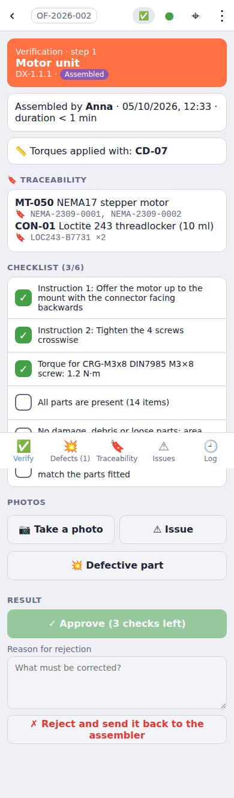
A part can arrive damaged (spotted by the Warehouse, with the compartment's ⚠ button) or break or get damaged during assembly (the Assembler or Quality, with 💥 Broken or defective part).
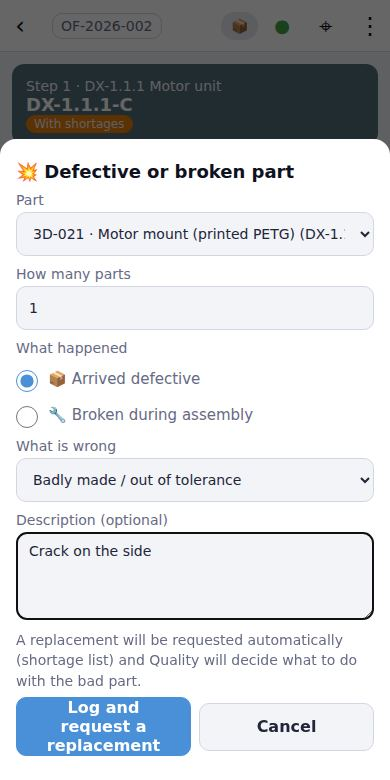
What happens next:
Quality decides what to do with the bad part. 💥 Defects tab:
| Decision | When |
|---|---|
| ↩ Return to supplier | It arrived defective. In the note, the return number (for example, RMA-2026-017). |
| 🗑 Scrap | It cannot be fixed. |
| 🛠 Repair / recover | It can be fixed. |
| ✓ Accept as is | It can be used anyway. If you put it back in the box, the Warehouse must press Arrived to close the replacement. |
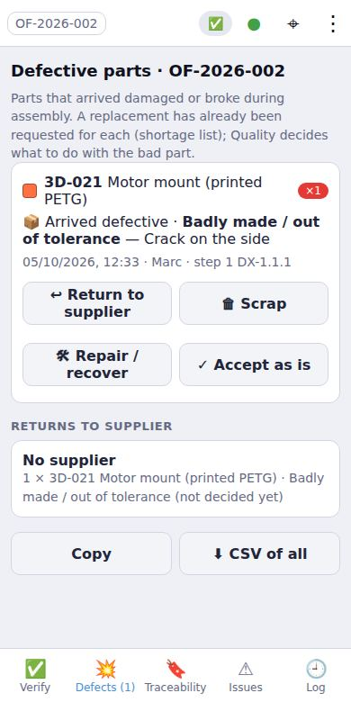
Below is the list of returns by supplier, with Copy, Share and ⬇ CSV buttons to send it.
Anyone can open an issue from the Issues tab, or with the ⚠ Issue button on a step or a box:
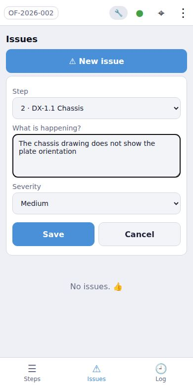
Quality and the Manager mark it as resolved, with an explanation.
Board. The order's status at a glance:
Buttons: 👥 People, 📊 Results, 💥 Defects and 🔒 Close the order.
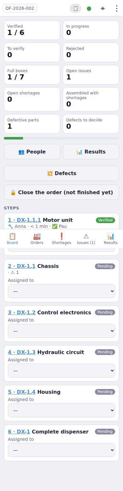
Results. The order's indicators:
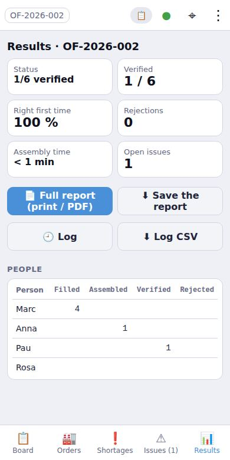
📄 Full report opens the order report, ready to print or save as PDF (in the print dialog, choose Save as PDF). It is shown in the language of whoever opens it and contains:
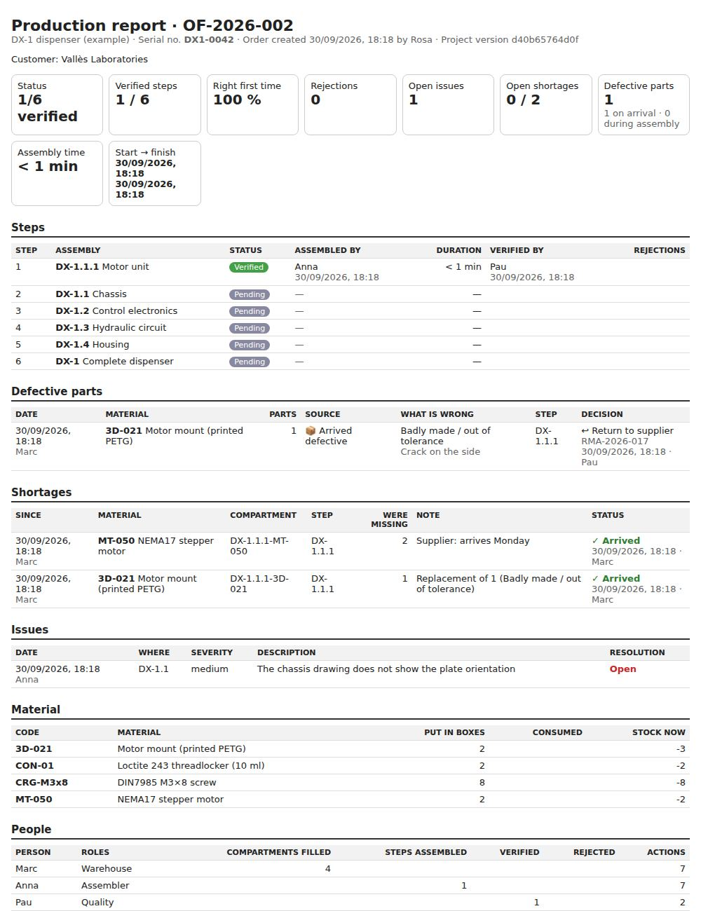
Closing the order. On the Board, 🔒 Close the order. If there are steps still to verify, shortages or defects to decide, the app warns you first. A closed order is read-only. If needed, it can be 🔓 Reopened.
Building another unit. Create a new order (section 6.2). The project is the same; progress starts from zero.
If a device loses Wi-Fi, the header dot turns 🔴 and the app keeps working:
muntatge.html and tap Example project, or open the configurator's .fordre.json file (menu ⋮ › Open project file).Marc is filling the Motor unit container. The NEMA17 motors have not arrived.
DX-1.1.1-C, on compartment MT-050, press ⚠ › It has not arrived › How many could you put in? 0 › note Supplier: arrives Monday. Fill the rest with Fill everything.MT-050. The app says "Arrived · Shortage resolved".One of the printed 3D-021 mounts arrives cracked.
3D-021 › ⚠ › It arrived defective › 1 part › Arrived defective › Badly made / out of tolerance › description "Crack on the side" › Log and request a replacement.While tightening, Anna strips the thread of 2 M3×8 screws.
CRG-M3x8 › 2 › Broken during assembly › Broken › "Thread stripped while tightening" › Log and request a replacement.Menu ⋮ › 👤 Switch person. If there are unsent changes, the app warns you. Each person's changes are sent under their name even if someone else has signed in since.
Rosa: Board › People › the person › Deactivate. Their sessions are closed on every device.
Marc prefers to work in Spanish, Anna in Catalan and an external maintenance technician in English.
&lang=es, &lang=ca or &lang=en.| What happens | Why | What to do |
|---|---|---|
| The phone does not open the server app. | It is not on the same Wi-Fi, or the address is wrong. | Connect it to the workshop Wi-Fi and open the address shown by the server (or scan the QR). |
| A browser security warning appears. | The workshop certificate is not installed. | Install it (section 2.7) or accept the warning (Advanced › Proceed). |
| Everything was fine and suddenly the security warning appears on every phone. | The server changed IP and created a new certificate. | Install the new certificate on every device and give the server a fixed IP (section 2.4, step 5). |
| The scanner says "The camera cannot be opened". | Camera permission is missing, or it is not a secure connection. | Give the browser camera permission. Open the app over https, not http or by double-click. |
| The scanner does not read the QR. | Low light, too close or a small label. | Move back a little, add light, or type the code in the bar at the bottom. |
| "Label from another project or an earlier version". | The label is from an earlier version of the project. | Reprint the labels from the configurator. |
| "Incorrect name or PIN". | Wrong PIN. | Try again. After 5 errors you must wait a minute. The Manager can change the PIN. |
| "Your role does not allow this action". | The person does not have the required role. | The Manager adds the role (People). |
| "You cannot verify a step you assembled yourself". | Four-eyes rule. | Have another Quality person verify it. |
| "Parts are missing: it cannot be approved". | The step is assembled with shortages. | The assembler must complete it when the parts arrive. |
| The header dot stays 🟠 or 🔴 for a long time. | The server is not responding or the device has no Wi-Fi. | Check the Wi-Fi and the server (sudo systemctl status fordre). No changes are lost. |
| "This project is not on the server". | A project that has not been published was opened. | The Manager must publish it (🏭 Workshop › Publish). |
| The server does not start: "No es pot obrir el port 8443" (cannot open port 8443). | Another program is using the port. | Stop the other program or change the port (--port 9443). |
| The configurator shows a box with a "sticks out" warning. | The part is taller than the compartment. | Check the material's dimensions, raise the Maximum depth or use a lid (the lid gets a taller frame). |
| The trays are too large for the printer. | The bed size is wrong. | ⚙ Settings › 3D printer › Bed X / Bed Y. |
| Press-fit lids are too tight or too loose. | The clearance is not calibrated. | Print the calibration piece (section 3.2). |
| The app appears in a language that is not yours. | The browser's language was used. | Menu ⋮ › Language (in the configurator, the CA / ES / EN selector). The device will remember it. |
Step statuses
| Status | Means |
|---|---|
| Pending | It cannot be started yet or has not been started. |
| Ready | The sub-assemblies are assembled and the boxes are full. |
| In progress | Assembly has started. |
| Assembled with shortages | Assembled, but parts are missing that have not arrived or have broken. It does not hold up the next step. |
| Assembled | Complete and awaiting verification. |
| Rejected | Quality rejected it, and it goes back to the assembler. |
| Verified | Quality approved it. |
Box statuses
| Status | Means |
|---|---|
| Empty | Nothing has been put in. |
| Filling | Part of the material has been put in. |
| With shortages | Material that has not arrived is missing. |
| Full | All the compartments are full. |
| In use | The assembler has picked all the compartments. |
| Returned | It came back empty to the warehouse. |
| Action | 📦 Warehouse | 🔧 Assembler | ✅ Quality | 📋 Manager |
|---|---|---|---|---|
| Fill and empty boxes, stock | ✓ | ✓ | ||
| Mark a shortage | ✓ | ✓ | ||
| Log a defective or broken part | ✓ | ✓ | ✓ | ✓ |
| Pick boxes, start, assemble, complete | ✓ | ✓ | ||
| Return boxes | ✓ | ✓ | ✓ | |
| Verify (approve or reject) | ✓ | ✓ | ||
| Decide what to do with a defective part | ✓ | ✓ | ||
| Resolve issues | ✓ | ✓ | ||
| Open issues, take photos | ✓ | ✓ | ✓ | ✓ |
| Assign steps, open and close orders, people, publish | ✓ |
192.168.1.50)| What | Address |
|---|---|
| Help page and certificate | http://192.168.1.50:8080 |
| Workshop app | https://192.168.1.50:8443/muntatge.html |
| Workshop app, by role | https://192.168.1.50:8443/muntatge.html?rol=magatzem (or muntador, qualitat, responsable) |
| Configurator | https://192.168.1.50:8443/index.html |
| Configurator with an example list | https://192.168.1.50:8443/index.html?llista=exemples/plantilla_fordre.csv |
| Any of the above in English | Add ?lang=en (or &lang=en if there is already a ?) |
| Key | Action |
|---|---|
F | Focus on the selection in the 3D view. |
Home | Show all. |
Delete | Delete the selection. |
Esc | Close the open dialog. |
In the workshop app, a USB or Bluetooth barcode reader works without any setup: scan and the code is processed automatically.
.fordre.json. Lists: .csv, .xlsx. Boxes: .stl, .3mf. RFID labels: .csv.muntatge.html, servidor/, dades/, exemples/…) are in Catalan and do not change with the language.LICENSE file). The third-party libraries (Three.js, qrcode-generator, SheetJS, jsQR) carry their own licences in vendor/llicencies/.